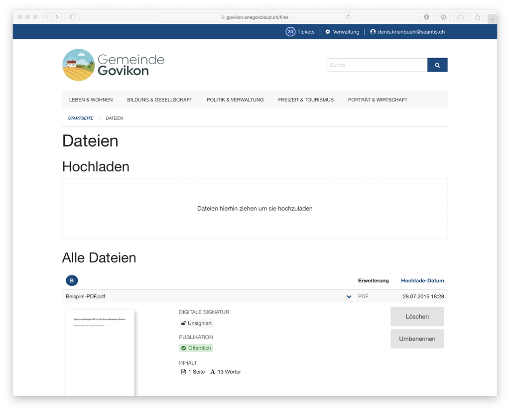
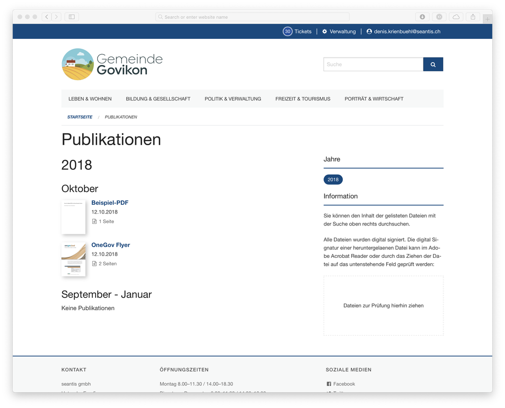

23.10.2018
Digitale Signaturen für Gemeinden
In Zusammenarbeit mit der Swisscom bietet die OneGov Cloud eine elektronische Unterschrift zur rechtsgültigen Signatur von Dokumenten.
Amtliche Publikationen werden vermehrt digital verbreitet. Einwohnerinnen und Einwohner sehen sich den letzten Gemeinderatsbeschluss auf ihrem Handy an. Dokumente werden heruntergeladen oder per E-Mail verschickt.
Rechtliche Bedeutung der elektronischen Signatur
Elektronische Unterschriften bzw. digitale Signaturen ermöglichen die Sicherstellung der Integrität von Dokumenten und bestätigen deren Urheberschaft. Ergo kann damit sichergestellt werden, dass ein digital signiertes Dokument seit der Unterschrift nicht verändert wurde und dass es von einer bestimmten Person bzw. Organisation unterzeichnet wurde.
Qualifizierte elektronische Signaturen, welche mit einem qualifizierten Zeitstempel verbunden sind, sind rechtlich der eigenhändigen Unterschrift gleichgestellt (Art. 14 Abs. 2bis OR, vgl. https://www.egovernment.ch/de/dokumentation/rechtliche-fragen/elektronische-signatur).
Eine verbesserte Dateiverwaltung
Für die Integration der digitalen Signatur mussten entsprechende Vorarbeiten geleistet werden. Der erste Schritt war die Weiterentwicklung der Dateiverwaltung. Die weiterentwickelte Dateiverwaltung sieht nicht nur besser aus, sondern bietet auch zusätzliche Funktionen:
- Dateien können nun einfach umbenannt werden.
- Es gibt eine Vorschau für PDF Dateien.
- Es ist möglich eine Datei direkt beim Hochladen zu bearbeiten.
- Dateien können zu einem bestimmten Zeitpunkt publiziert werden.

Workflow zur Publikationssteuerung
Dateien und Bilder sind auf der OneGov Cloud nach dem Upload grundsätzlich öffentlich. Allerdings sind Uploads praktisch unauffindbar. Man muss die Datei irgendwo auf der Webseite verlinken um diese auffindbar zu machen.
Signierte Dateien sind nicht direkt öffentlich, sondern durchlaufen einen Publikationsworkflow. Der Publikationszeitpunkt kann über die Dateiverwaltung gesteuert werden. So kann man eine Datei beispielsweise bereits auf einer Themen-Seite verlinken, diese aber erst ab einem bestimmten Zeitpunkt veröffentlichen. Die Veröffentlichung ist dabei auf die Stunde exakt steuerbar.
Digitale Signaturen
Dokumente können in der OneGov Cloud rechtsgültig digital unterzeichnet werden. Der Prozess der digitalen Signatur stellt erhöhte Anforderungen an die Sicherheit. Nur Administratoren haben das Recht zum digitalen Signieren und selbst wenn sie bereits eingeloggt sind müssen sie zum Signieren immer ihren YubiKey verwenden. Damit wird verhindert, dass jemand unbefugt ein Dokument mit einer elektronischen Signatur erstellt. Für eine missbräuchliche Signatur müssten also nicht nur das Login und Passwort des Administrators in falsche Hände geraten, sondern auch dessen physischer YubiKey gestohlen worden sein. Eine handschriftliche Unterschrift zu fälschen scheint uns einfacher.
Vor jedem digitalen Signaturvorgang wird also zur Sicherheit im Hintergrund das Login und der YubiKey geprüft. Ein sogenannter digitaler Fingerabdruck des Dokuments wird danach an den ‚All-in Signing Service‘ der Swisscom gesendet wo das Dokument digital signiert wird.
Folgende Informationen werden für die Nachvollziehbarkeit permanent aufgezeichnet:
- Die ID der Anfrage an die Swisscom
- Das Yubikey Token
- Der Zeitstempel
- Der auslösende Benutzer
- Der Fingerabdruck der Datei vor der Signatur
- Der Fingerabdruck der Datei nach der Signatur
Selbst wenn die Datei später gelöscht wird, können wir weiterhin prüfen ob eine bestimmte Datei auf unserem System signiert wurde.
Amtliche Publikationen
Elektronisch unterschriebene Dokumente erhalten einen speziellen Status als amtliche Publikationen. Amtliche Publikationen werden auf einer neuen Ansicht dargestellt, welche prominent von der Startseite verlinkt ist.
Auf der Ansicht Publikationen werden Dokumente angezeigt, welche folgende Eigenschaften haben:
- Die Datei ist ein PDF.
- Die Datei ist öffentlich.
- Die Datei wurde elektronisch signiert.
Hierbei gruppieren wir die Dateien nach Zeitpunkt der Erstellung, also wann diese hochgeladen wurden. Somit können auch bestehende Dokument neu digital signiert werden.

Verifikation digitaler Signaturen
Signierte Dateien können grundsätzlich im Adobe Acrobat Reader auf ihre Signatur hin überprüft werden. Dafür muss das Programm Acrobat Reader auf dem Rechner installiert sein und der Benutzer muss wissen, wie die Überprüfung vorgenommen werden kann.
Um die Überprüfung zu vereinfachen ist auf der Ansicht mit dem amtlichen Publikationen ein kleines Tool zur Verifizierung der signierten Dateien eingebaut. Hat ein User ein Dokument heruntergeladen oder auf anderem Weg erhalten, kann er die digitale Signatur direkt auf der OneGov Cloud überprüfen lassen. Dies geschieht im Browser, ohne dass die Datei auf den Server hochgeladen wird.
Für die Prüfung wird das zu prüfende signierte Dokument einfach ins Prüffeld gezogen. Das Ergebnis der Prüfung wird unmittelbar angezeigt.
Shared Signing Service
Das Zertifikatsmanagement ist erfahrungsgemäss eine nicht ganz einfache Sache. In Zusammenarbeit mit der Swisscom bietet die OneGov Cloud allen Gemeinden einen ‚Shared Signing Service‘ ohne Zusatzkosten an. Einziger Nachteil: im Adobe Acrobat Reader wird das verwendete Zertifikat als ‚signed.onegovcloud.ch‘ angezeigt. Ist dies nicht gewünscht, so bezieht die Gemeinde bei der Swisscom ein eigenes Zertifikat. Auch dafür können wir in Zusammenarbeit mit der Swisscom ein sehr attraktives Angebot machen. Die OneGov Cloud bietet also auch bei der digitalen Signatur die ideale Lösung für alle Gemeinden, gross und klein.
Volltextsuche für Dokumente
Zu guter Letzt gibt es auch noch eine Verbesserung bei der Suche. Mit der neuen Version der OneGov Cloud werden die Inhalte von Dokumenten in den Index für die Volltextsuche aufgenommen. Angemeldete Benutzer können alle PDF Dateien durchsuchen, Besucher nur publizierte und signierte Dateien. Voraussetzung für die Indexierung ist, dass das PDF eingebetteten Text enthält. Ist im PDF lediglich ein Bild eines Dokumentes und kein Text gespeichert, können die Inhalte des Dokumentes nicht indexiert werden. Dokumente mit nur Bilddateien (z.B. aus einem Scanner) sind grundsätzlich zu vermeiden. Wenn das System die Textinhalte nicht auswerten kann, so ist nämlich auch die Barrierefreiheit z.B. für Sehbehinderte nicht gegeben.
Die digitale Signatur ist ab sofort in der OneGov Cloud verfügbar. Mehr Informationen zur OneGov Cloud: www.onegovcloud.ch
Fabian Reinhard, fabian.reinhard@seantis.ch, +41 41 511 22 50